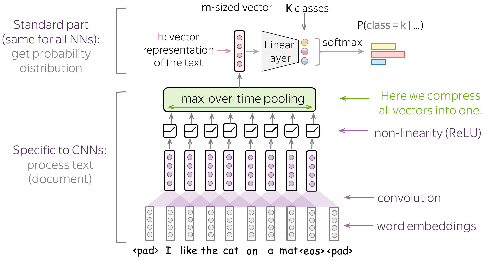

7.3 CNN Text Classification
Several kernel sizes, then a classifier on the pooled features.
1. From a sentence to one vector
Note 7.2 gave you 1-D filters over embeddings. Classification needs a single vector (or a small stack) that you can pass to a softmax.
The basic move: run the convolutions, then global pool over time. Each filter becomes one number (its max, or its mean, over every window). A sentence of any length becomes a vector of length n_filters. Then a dense layer plus softmax (or sigmoid) produces the label.

The middle can change—more layers, dropout, a residual—but somewhere you have to collapse time. If you skip that collapse you still have a sequence, which is a tagging setup, not a document label.
Sources: Practical Natural Language Processing, Natural Language Processing in Action, and Voita’s notes.
2. Why global max is the default
Global max asks: did this detector fire anywhere? For sentiment, topic, and spam that is usually the right question. terrible in position 2 or position 40 should both count.
Global mean asks how often / how strongly it fired. Use it when the label depends on the whole document (average tone of a long review), not on one smoking-gun phrase.
Either way you get a fixed-width representation. That is the CNN analogue of “average the word vectors,” except the features are learned phrases, not single tokens.
3. Several kernel sizes at once
A kernel of 2 sees pairs. A kernel of 3 sees short phrases. A kernel of 5 sees a longer idiom. You do not have to pick one.
Train parallel conv banks: 100 filters of size 2, 100 of size 3, 100 of size 5 (Kim 2014 is the paper everyone cites). Concatenate the three global-pooled vectors. Classify.

That is the architecture you should be able to draw. It is also the one you will see in Keras as three Conv1D branches into Concatenate.
| Piece | Typical choice |
|---|---|
| Embeddings | 100–300-D, pretrained or learned |
| Kernel sizes | 2, 3, 4 and/or 5 |
| Filters per size | 64–128 on small data; more if you have it |
| Pool | global max |
| Regularization | dropout on the concatenated vector |
| Loss | binary or categorical cross-entropy |
4. How this sits next to Week 6
Week 6: TF–IDF + linear SVM. Fast, strong, no GPU.
This note: embeddings + multi-kernel CNN. You pay for training time. You gain detectors that share strength across similar phrases (not good / not great) and a representation whose width does not grow with (|V|).
If the CNN does not beat the SVM by enough to matter, ship the SVM. The pipeline in note 6.1 did not change: vectorize (here: embed + conv), train, evaluate with F1 when the classes are skewed.
5. Failure modes
- Too few examples. A CNN has more knobs than
LinearSVC. On 500 labeled tweets the SVM usually wins. - Kernel too wide. Size 15 on tweets is almost the whole sentence, once. You wanted local features.
- No padding / tiny sentences. Edge tokens never sit in the center of a valid window (note 7.1).
- Ignoring pretrained embeddings. Random embeddings need more data. Start from Word2Vec or GloVe unless the domain is truly alien.
Week 8 replaces the fixed window with a loop that can carry information across the whole sentence.
Kim-style checklist. (1) Embed. (2) Three Conv1D branches. (3) Global max on each. (4) Concatenate. (5) Dropout. (6) Dense + softmax. If you cannot point to those six pieces in a notebook, you do not yet have the lecture model—you have a pile of layers.
6. Evaluation stays Week 6
Accuracy if the labels are balanced. F1 if they are not. A CNN that is 2 points of accuracy better than an SVM and 10 points of minority-class F1 worse is not an upgrade. Report the same classification_report you used for (k)-NN.
7. Practice
-
A review has 40 tokens and you use 128 filters of size 3 with global max. What is the width of the vector that enters the dense layer?
-
Why concatenate kernels of size 2, 3, and 5 instead of one kernel of size 5?
-
You have 400 labeled emails and a good TF–IDF SVM. Should you replace it with this CNN first, or report the SVM as the baseline? Why?